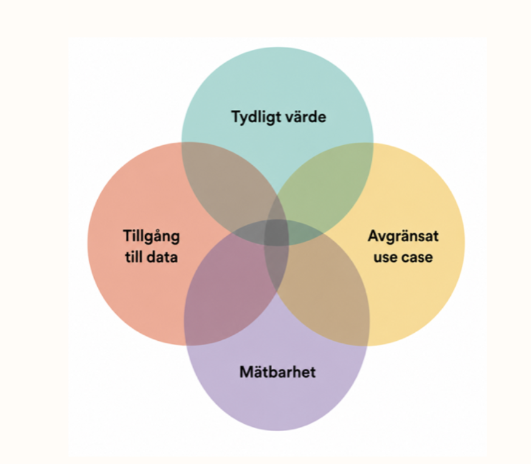

Relationsträff Uppsala · 19 november 2026 · Paulina Modlitba
Här finns allt från förmiddagen: det viktigaste från föreläsningen, arbetsbladet till workshopen och frågorna att ta med hem till ledningsgruppen.
Plats
Uppsala Konsert & Kongress
Sal D, bottenplan
Föreläsning
08.00 till 09.00
Frukost från 07.00
Workshop
09.30 till 11.00
Ditt eget bolag, max 40 deltagare
Arrangör
Relation
Mötesplatsen för företag i Uppsala län
Snart kan alla använda AI. Bolagen som lyckas börjar i problemet de vill lösa och ser sedan vad AI kan göra för det.
McKinsey jämför AI High Performers, ungefär 5 % av bolagen som får mätbar effekt på resultatet av AI, med alla andra.
Källa: McKinsey/QuantumBlack, The State of AI in 2026.
När alla blir lika duktiga på AI blir era egna data det som skiljer er från konkurrenterna.
Den stora nyttan kommer när AI kan jobba över hela verksamheten, och när kunskapen som finns i system, mejl och hos erfarna kollegor blivit ”datafierad” så att AI kan använda den. I de flesta bolag finns den kunskapen utspridd på många ställen i dag.
Thomas ”Kedde” Kednert driver ett markentreprenadbolag i Rotebro. Med AI-verktyget Lovable byggde han Kbag, en plattform för leveranser av byggmaterial och bortforsling av avfall. Kunden får pris utifrån sin adress i stället för zon och kan följa sin order i realtid. Första fungerande versionen tog ungefär tre veckor.
Läs hela historien hos Lovable ↗
Utvecklingskostnad
500 dollar
Pris för kunden
−50 %
Marginal mot konkurrenterna
+50 %
På tre månader
1 kranbil blev 5
Medarbetarna fick realtidsdata och mer ansvar för sin egen prestation, och kundtjänsten delades i ett operativt team och ett coachningsteam.
Nöjdare kunder
>10 %
Onboarding
Från 4 månader till 4 veckor
Ärenden som AI summerar och kategoriserar
85 %
2021 lanserade IKEA chattboten Billie, som löste ungefär hälften av kundfrågorna. I stället för att bara räkna hem besparingen tittade IKEA på frågorna Billie inte kunde svara på, och upptäckte att kunderna ville ha hjälp med inredning. 8 500 medarbetare i kundtjänst blev inredningsrådgivare på distans, och en ny affär växte fram.
Sparat med chattboten
13 milj euro
Ny försäljning första året
1,3 mdr euro
Medarbetare som fick ny roll
8 500
AI-transformation är 10 % teknik, 20 % verktyg och processer, och 70 % människor.
En lyckad transformation kräver strategi uppifrån och energi nerifrån.
Här arbetar du med ditt eget bolag. Skriv direkt här, eller rita på arbetsbladet och blädderblocket. Det du skriver här sparas bara i din egen webbläsare.
Steg 1 · Välj en process 10 min
Välj en process som återkommer ofta och som påverkar kunden. Leta efter det ni gör av gammal vana, för att det var dyrt eller krångligt att göra annorlunda.
Steg 2 · Rita flödet 15 min
Grovt räcker. Markera var beslut fattas, var ni prioriterar, var det blir osäkert eller stressigt och var det blir extra manuellt jobb.
Fyll i så många rutor du behöver, och kryssa i det som stämmer för varje steg.
Steg 3 · AI:s roll 20 min
Gå igenom rutorna och fundera på vilken roll AI kan ta. Lägg mest tid på C, där finns tillväxten.
Sålla din bästa idé
Steg 4 · Testa på en kollega 2 × 10 min
Visa ditt flöde och berätta idén på två minuter, sedan ställer kollegan frågor. Byt efter tio minuter. Frågor att ställa till varandra:
Steg 5 · Första steget 5 min
Något litet och konkret: ett möte, ett test, ett samtal med en kund.
Reflektion · Helgrupp 10 min
Ta med dem till nästa ledningsmöte.
Start small, think big.
Börja med ett use case som har tydligt värde, tillgång till data, är avgränsat och går att mäta. Lär er på det, och skala sedan.

Paulina Modlitba är ingenjör, investerare, föreläsare, författare och ”AI-expert” i TV. Hon har bakgrund från KTH och MIT och driver We Should Be Friends AB. Varje vecka skriver hon nyhetsbrevet Pausplings trendspaning.